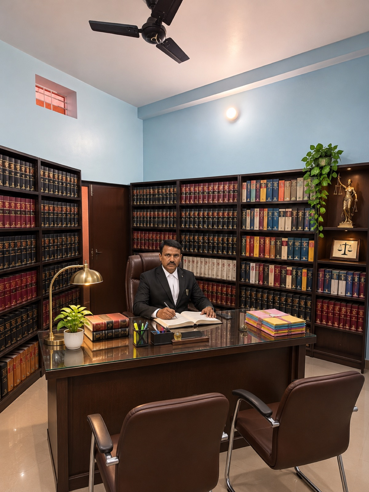
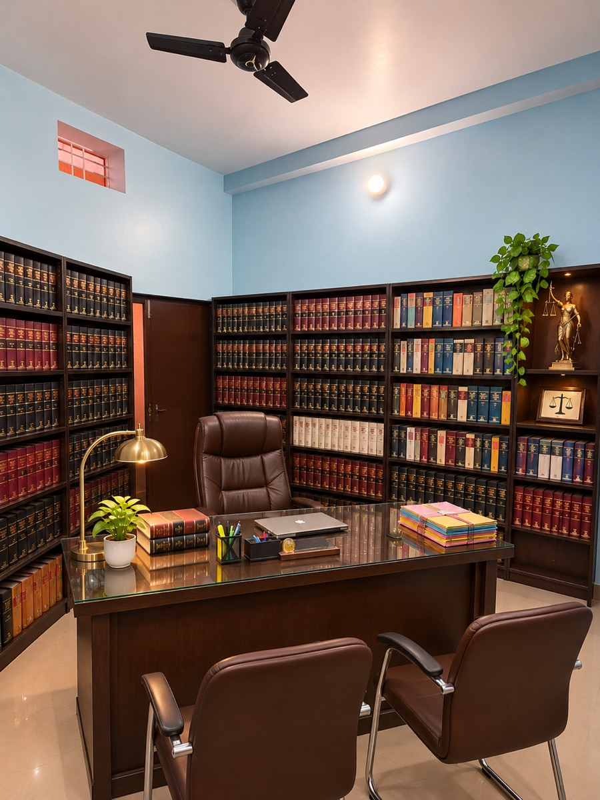
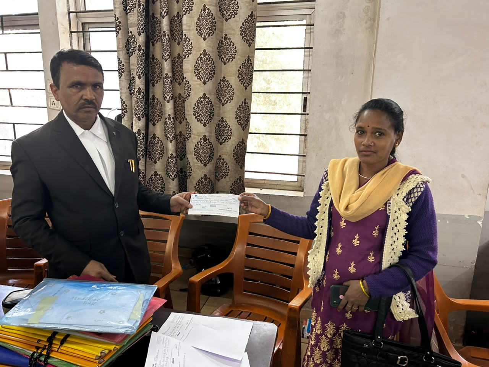
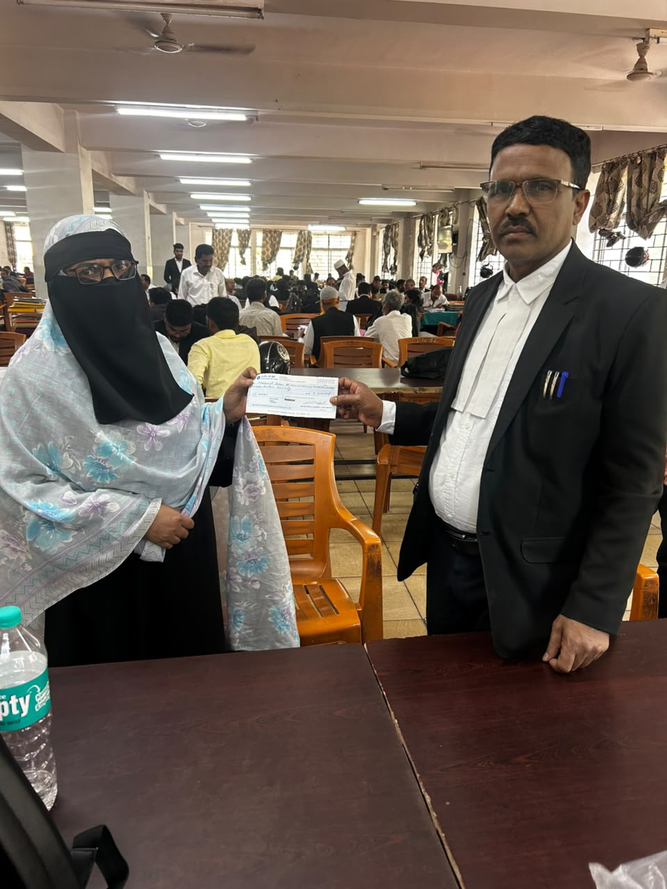

§
Civil Matters
Legal representation and assistance in civil matters.
Santosh Kumar Sahu / Advocate
Professional information and contact details for Advocate Santosh Kumar Sahu, based in Ranchi, Jharkhand.

A considered approach to law
Santosh Kumar Sahu is a practicing advocate based in Ranchi, Jharkhand, with more than 20 years of professional experience.
His academic qualifications include an M.A. and LL.B. This website provides basic professional and contact information for visitors seeking to learn more about his practice.
Professional practice
Professional practice in civil and criminal matters in Ranchi, Jharkhand.
Legal representation and assistance in civil matters.
Legal representation and assistance in criminal matters.

A SPACE FOR THE LAW / 02A longstanding practice
Advocate Santosh Kumar Sahu has over 20 years of experience in the legal profession. Further details of court practice, enrolment and professional background are to be confirmed.
Information at a glance
Additional professional particulars can be provided once verified.
Academic qualifications provided by the advocate's family.
Experience in the legal profession, as provided.
Enrolment number, date and State Bar Council details.
Moments from practice
A selection of photographs shared by the advocate's family.


Ranchi, Jharkhand
For professional enquiries, use the contact details below.
CALL THE OFFICE ↗Pandra, Friends Colony
Road Number 2, Ranchi
Jharkhand, India
Table No. 31, First Floor
Ranchi District Court
Ranchi, Jharkhand
To be confirmed
This website is intended to provide general professional information. It does not constitute legal advice, advertising or solicitation. Viewing this website or contacting the office does not, by itself, establish an advocate-client relationship.
Telephone, email and external map links are provided for convenience. Please avoid sending confidential or sensitive information until an appropriate communication channel has been agreed upon. External services may apply their own privacy policies.